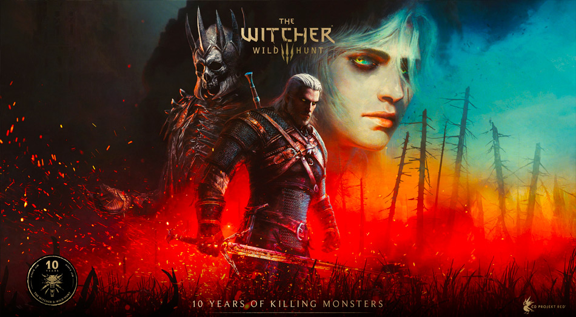

Zaklínač 3: Divoký hon (The Witcher 3: Wild Hunt) je jednou z nejvýznamnějších a nejvlivnějších her v historii videoherního průmyslu. Tato akční RPG hra, kterou vyvinulo polské studio CD Projekt RED, vyšla v roce 2015 a okamžitě redefinovala standardy pro hry s otevřeným světem a vyprávění příběhů.
Hra byla oficiálně oznámena v únoru 2013 a původně měla vyjít v roce 2014. Vývojáři však vydání několikrát odložili, aby hru maximálně vyladili a odstranili chyby, což se nakonec ukázalo jako skvělé rozhodnutí. Datum vydání je 19. května 2015. Hra je založena na knižní sáze polského spisovatele Andrzeje Sapkowského. Hráč se ujímá role Geralta z Rivie, geneticky mutovaného lovce monster (zaklínače), který v rozsáhlém fantasy světě sužovaném válkou hledá svou adoptivní dceru Ciri. Tu totiž pronásleduje tajuplná a děsivá Divoká honba. Svět Zaklínače není černobílý. Hráč málokdy volí mezi dobrem a zlem; většinou si vybírá „menší zlo“. Rozhodnutí navíc mají často dalekosáhlé následky, které se projeví až po mnoha hodinách hraní. Hra nabízí 3 hlavní konce a desítky menších variant stavu světa. Svět je rozdělen do několika masivních regionů - od válkou zničeného Velení, přes svobodné město Novigrad, až po severské ostrovy Skellige inspirované keltskou a vikinskou mytologií. Gwent: Karetní minihra implementovaná přímo do hry se stala tak populární, že si vysloužila vlastní samostatné zpracování.
Kromě bezplatných balíčků dostala hra dvě masivní, placená příběhová rozšíření, která kvalitou i rozsahem předčila většinu samostatných her na trhu. Srdce z kamene (Hearts of Stone, říjen 2015): Přineslo temný, komornější příběh inspirovaný faustovskou legendou, ve kterém Geralt uzavře dohodu s tajuplným Zrcadelníkem. O víně a krvi (Blood and Wine, květen 2016): Zavedlo hráče do zcela nového regionu Toussaint, který nebyl zasažen válkou a připomíná renesanční Francii či Itálii. Toto rozšíření nabídlo více než 30 hodin obsahu a fungovalo jako definitivní a dojemná tečka za Geraltovým příběhem. Úspěch Zaklínače 3 byl naprosto fenomenální a katapultoval CD Projekt RED mezi absolutní herní elitu. Na prestižním udílení cen The Game Awards 2015 získal Zaklínač 3 titul Hra roku (Game of the Year) a CD Projekt RED byl vyhlášen vývojářským studiem roku. Datadisek O víně a krvi pak v roce 2016 vyhrál cenu za nejlepší RPG roku, což je pro DLC historický unikát. Zaklínač 3 zásadně ovlivnil to, jak herní průmysl nahlíží na hry s otevřeným světem. Nastavil laťku v oblasti psaní dialogů, dospělého vyprávění a designu questů, ze které dodnes čerpají série jako Assassin's Creed nebo Cyberpunk 2077 (další hra od téhož studia). Masivní úspěch hry navíc definitivně zpopularizoval zaklínačský svět celosvětově, což vedlo k vytvoření seriálové adaptace od Netflixu, komiksů, deskových her a k oznámení nové zaklínačské trilogie i enginového remaku úplně prvního dílu.
